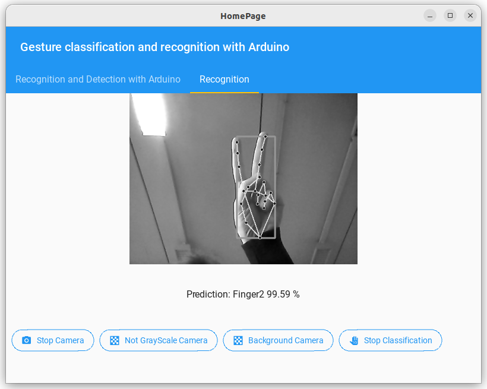

Gesture classification and recognition with Arduino
Creazione e sviluppo di un applicativo desktop per il riconoscimento
delle gesture della mano tramite
l'utilizzo di Mediapipe ed integrazione con Arduino
Una problematica nota nel campo dei dispositivi smart consiste nella possibilità di
interagire con loro
attraverso varie opzioni, tra le più comuni vi è la voce per impartire comandi di
varia natura, il viso per il riconoscimento facciale oppure, di molto più interesse per
noi, l'utilizzo delle mani per il riconoscimento di gestures e segni. Il tutto è
finalizzato alla modifica del comportamento del dispositivo a seconda delle esigenze.
Motivazioni
Il progetto posto in essere consiste nella detection e nella classificazione di hand
gesture per impartire comandi ai sensori di un arduino. Le motivazioni che ci hanno
portato a concentrare
i nostri sforzi nella realizzazione di un applicativo per la classificazione e il
controllo degli hand sign e delle hand
gestures è da attribuire alla loro utilità in diversi ambiti, come ad esempio quello
domestico (e.g, controllo di dispositivi smart come accendere le luci o alzare/abbassare
le tapparelle in maniera semplice e intuitiva).
Obiettivi
La realizzazione del seguente progetto consta di quatro parti:
Creazione dei datasets per la classificazione degli hand sign e
per le gestures della mano;
Training dei modelli tramite i corrispettivi datasets;
Implementazione di un applicativo grafico per la gestione delle
gesture;
Connessione con l'Arduino e invio dei comandi ai sensori.
Assemblaggio del circuito
Il processo di assemblaggio del circuito di Arduino, portato a termine tenendo in considerazione
l'insieme delle gestures da identificare, è finalizzato a garantirci la possibilità di simulare un ambiente reale.
I componenti usati per l'assemblaggio del circuito sono elencati di seguito:
Microcontrollore: Arduino uno.
Interfacciamento dei componenti:
Led: Rosso, Verde, Blu;
Piezometro;
Servo Motore.
Schema circuitale
Nell'immagine sottostante viene mostrato lo schema circuitale seguito dall'assemblaggio
dei vari componenti.
Utilizzo dei componenti
I componenti sopra elencati, mediante l'integrazione con l'applicativo desktop, vengono
comandati tramite le gesture ad essi collegate:
Led:
Comportamento "Singolo":
Rosso: si accende quando viene recepita
la gesture che indica il numero due.
Verde: si accende quando viene recepita
la gesture che indica il numero tre.
Blu: si accende quando viene recepita la
gesture che indica il numero quattro.
Comportamento "Collaborativo":
Il riconoscimento della gesture Palm Open - mano aperta
- comporta l'accensione contemporanea di tutti i led.
Il riconoscimento della gesture First - mano chiusa
- comporta lo spegnimento contemponeo di tutti i led.
Piezometro:
Il riconoscimento della gesture Palm Open - mano aperta -
emette una nota che equivale al valore di 262.
Il riconoscimento della gesture First - mano chiusa -
emette una nota che equivale al valore di 294.
Servo Motore:
Il riconoscimento della gesture Index - indice della mano
in base al movimento che effettua - Rotazione senso
orario oppure Rotazione senso antiorario - ruota il servo motore da 0° a 180°
oppure da 180° a 0°.
Metodo
Hand detection
Lo strumento utilizzato per effettuare la detection della mano è
Mediapipe, questa è una
soluzione di Hand Traking ad alta fedeltà. Utilizza il machine learning per
dedurre 21 punti di riferimento 3D
da un singolo fotogramma.
Mediapipe utilizza una pipeline composta da più modelli che lavorano insieme:
Un modello di rilevamento del palmo che opera sull'immagine completa e restituisce
un riquadro di delimitazione della mano orientato;
Un modello di riferimento della mano che opera sulla regione della ROI(Region of
Interest) definita precedentemente dal rilevatore del palmo e
restituisce punti chiave della mano 3D ad alta fedeltà.
Dopo il rilevamento del palmo sull'intera immagine, il modello esegue una precisa
localizzazione
dei punti chiave composti da 21 coordinate 3D delle nocche della mano all'interno della ROI
rilevata tramite regressione.
Il modello apprende una rappresentazione coerente della posa della mano interna ed è robusto
anche per mani parzialmente
visibili.
Creazione dataset Hand sign
In questa fase, la generazione del dataset ha richiesto la creazione di uno script in
Python per l'estrapolazione
dei Keypoint della mano classification_gestures.py.
In particolare questo script, effettua la detection dei Keypoint con Mediapipe ed
estrapola
quest'ultimi in un file .csv che sarà usato come input per la fase di
training.
I dati estratti dai Landmarks, prima di essere inseriti nel file di dataset, vengono
preprocessati nel seguente modo:
Conversione delle coordinate relative all'ID:0 (punto di polso);
Conversione in un array mono dimensionale;
Normalizzazione rispetto ad un valore di massimo.
Eseguendo lo script con argomento mode 1 si avrà il seguente:
Utilizzando i tasti numerici da "0" a "5", i Keypoints verranno aggiunti al file
assets/dataset/keypoint.csv
come mostrato di seguito.
Prima colonna: numero della tastiera (utilizzato come l'ID della classe), dalla seconda
colonna in poi: coordinate dei Keypoints.
Creazione dataset Hand gesture
In questa fase, la generazione del dataset inerente alla classificazione delle hand
gestures ha richiesto l'estensione dello script
,precedentemente introdotto, affinchè implementasse la classificazione del segno
indice e di conseguenza, l'estrazione del singolo keypoint
dell'indice in una coda FIFO che mantiene i punti dei 20 frame
precedenti.
Anche in questo caso i dati estratti dai Landmarks vengono preprocessati, prima di
inserirli nel file di dataset.
Utilizzando i tasti numerici "0" e "1", i Keypoints verranno aggiunti al file
assets/dataset/keypoint_history.csv
Eseguendo lo script con argomento mode 2 si avrà il seguente:
Training
Il training delle reti e di conseguenza la creazione dei due modelli, ha richiesto la
creazione di un Jupiter Notebook per ciscun datatset;
neuralnetwork/hand_classificator.ipynb per quanto riguarda gli
hand sign.
neuralnetwork/hand_history_classificator.ipynb per quanto
riguarda le hand gesture.
Il dataset per gli hand sign è stato diviso in:
60% training;
20% test;
20% validation.
Il modello della rete vine creato nel seguente modo:
L'interfaccia grafica è stata realizzata mediante l'uso congiunto di due
librerie , Kivy e KivyMD. Lo scopo
finale della sua realizzazione
è interagire con arduino in modo semplice e veloce inglobando gli output dei precedenti
passaggi,
in particolare i due modelli risultanti dall' addestramento delle rispettive reti
neurali. I componenti che la costituiscono sono:
Una App Bar che mostra il nome dell'applicazione;
un Tab Menu che mostra le due modalità di funzionamento;
un modello di Arduino in una configurazione compatibile con il dispositivo
fisico per mostrare un feedback della conversione;
uno spazio per la camera che mostra il video della webcam;
un Flat Button per richiedere l'accensione della webcam;
un Flat Button per richiedere la connessione con il dispositivo
Arduino;
un Flat Button per richiedere l'avvio della classificazione.
Il risultato finale della disposizione degli elementi appena elencati è il seguente:
Tab - Recognition and Detection with Arduino
In questa tab viene mostrato il funzionamento congiunto dell'applicazione con Arduino.
Quindi, in successione, mediante i bottoni è possibile avviare la web cam, connettersi al
dispositivo fisico ed iniziare la fase di Detection sfruttando i modelli creati nelle fasi precendenti.
Di seguito viene mostrato il riconoscimento dell'hand sign Finger 2 che accende
il led rosso, inoltre in basso è possibile visionare la percentuale di previsione effettuata dal modello.
Tab - Recognition
In questa tab viene mostrato il funzionamento della sola Detection e Classificazione, congiunto con alcuni pre-processing
dell'immagine.
In particolare, il bottone grayscale camera trasforma in scala di grigi l'immagine acquisita inizialmente dalla webcam ed effettua la classificazione.

Invece, il bottone Background camera consente di effettuare la sottrazione del background nell'immagine nei limiti imposti dall'ambiente
in cui ci troviamo.
Implementazione e Codice
Implementazione
Le tecnologie software utilizzate per implementare il progetto sono state:
In questa sezione verranno presentati due video per la dimostrazione del funzionamento di Arduino. Il primo
mostra il funzionamento della sincronizzazione con gli hand sign. Dall'interfaccia grafica, descritta nelle sezioni precendenti,
vengono riconosciuti gli hand sign e successivamente vengono trasformati in comandi mandati in input ad Arduino, in particolare
è possibile notare come i led vengono accesi in sequenza, simultaneamente, oppure spenti.
Il successivo, invece, mostra la seconda modalità di funzionamento incentrata sulle due gesture implementate, ovvero
Clockwise per una rotazione in senso orario di 180° del servo motore, mentre la seconda, Counter clockwise, per una rotazione
di 180° in senso antiorario. Sul servo motore è stata posta una freccia per facilitare l'osservazione del movimento. In fase di boot, siccome
la posizione iniziale del servo motore, di default, è pari a 90°, l'Arduino per eseguire la gesture clockwise imposta il servo motore all'angolo 0°
per poi raggiungere i 180°. Da qui partirà poi la seconda gesture, ovvero counter clockwise, in cui dalla posizione iniziale
si procederà a ritroso per raggiungere gli 0°. Terminato il movimento, il servo motore viene riportato nella sua posizione di default, ovvero 90°.
Risultati quantitativi
Per valutare le performance del modello, è stata utilizzata come metrica la
F1-score.
Questa riassume le prestazioni predittive del modello utilizzando a sua volta due
ulteriori metriche:
Precision e Recall.
La precision è il rapporto tra il numero delle previsioni corrette di un evento
(classe) sul totale delle volte
che il modello lo prevede. Quando un modello è preciso per una classe, ogni volta che
prevede l'evento sbaglia raramente.
La recall misura la sensibilità del modello. E' il rapporto tra le previsioni
corrette per una classe sul totale dei casi
in cui si verifica effettivamente.
Per definizione, F1-score è la media aronica di Precision e Recall
definita come:
\[ \text{F1-score} = 2 \times \frac{Precision \times Recall}{Precision + Recall}\]
Questa formula può essere scritta in modo equivalente come:
\[\text{F1-score} = \frac{2}{\frac{1}{Precision} + \frac{1}{Recall}}\]
F1-score tiene conto sia di precision che di recall, il che significa che
tiene in considerazione sia dei
FP (false positive) che dei FN(false negative), essendo un valore compreso
tra 0 e 1, più
è vicino a 1, migliore è il modello.
Per rappresentare tali risultati è stata creata la matrice di confusione come ulteriore metrica nella quale
ogni riga
rappresenta i valori predetti, mentre ogni colonna rappresenta i valori reali.
L'elemento sulla colonna
j è il numero di casi in cui il classificatore ha classificato la classe "vera" j come
classe i. Attraverso
questa matrice è osservabile se vi è "confusione" nella classificazione di diverse
classi. Nella tabella relativa vengono rappresentati, per ogni classe, i diversi valori delle metriche.
In aggiunta, sono stati riportati i grafici relativi a Loss e Accuracy per i dati
di Train e di Validation.
Per quando riguarda il modello per la classificazione degli Hand Sign
abbiamo:
Classe
Precision
Recall
F1-score
Palm open
1.0
0.99
0.99
Fist (palm closed)
1.0
1.0
1.0
Index
0.97
1.0
0.99
Finger 2
0.99
0.97
0.98
Finger 3
1.0
0.99
1.0
Finger 4
0.99
1.0
1.0
Per quando riguarda il modello per la classificazione delle Hand Gesture
abbiamo:
 I dati estratti dai Landmarks, prima di essere inseriti nel file di dataset, vengono
preprocessati nel seguente modo:
I dati estratti dai Landmarks, prima di essere inseriti nel file di dataset, vengono
preprocessati nel seguente modo: